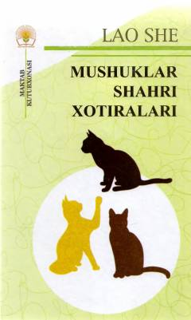

MSMarsda yashovchi odam-mushuklar dunyosi haqidagi fojiali-siyosiy roman-pamflet.
Mashhur xitoylik yozuvchi Lao Shening ushbu roman-pamfletida voqealar Mars sayyorasida yashovchi odam-mushuklar dunyosida kechadi. Asar fantastik shaklda yozilgan bo‘lib, XX asr boshlaridagi Xitoy jamiyatining fojiali siyosiy va ijtimoiy muammolarini o‘tkir tanqid qiladi. Kitob yuqori sinf o‘quvchilari va barcha adabiyot muxlislariga mo‘ljallangan.